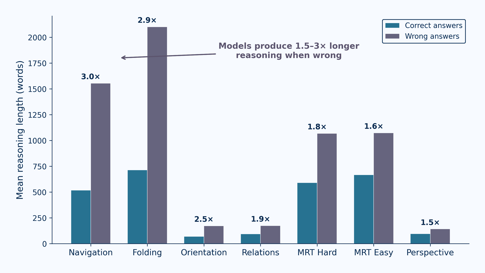
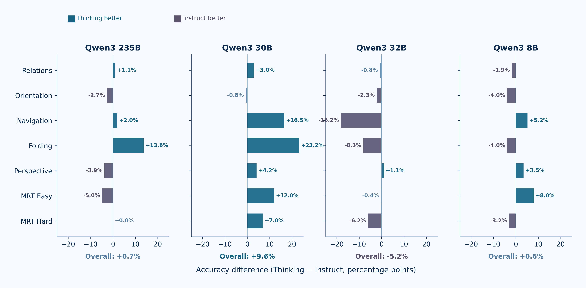
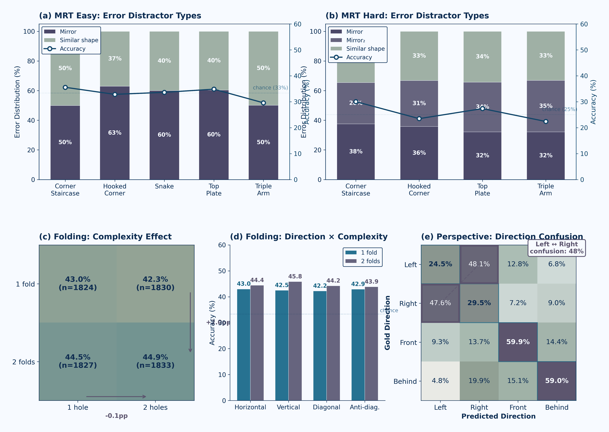
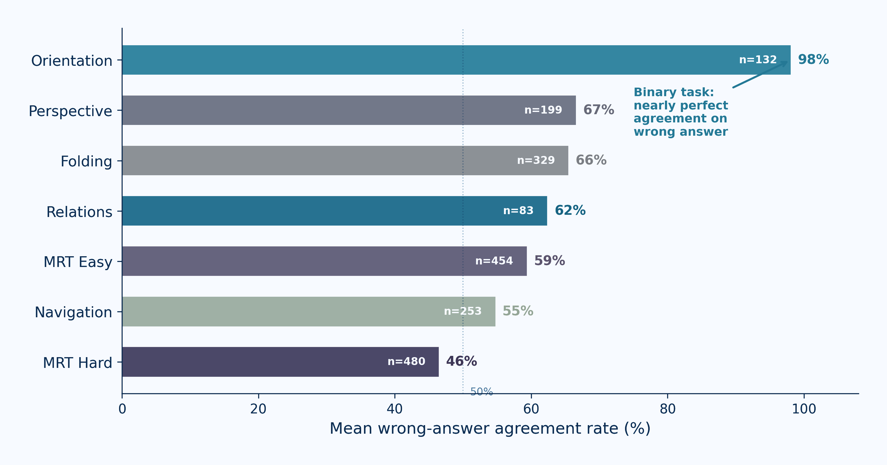
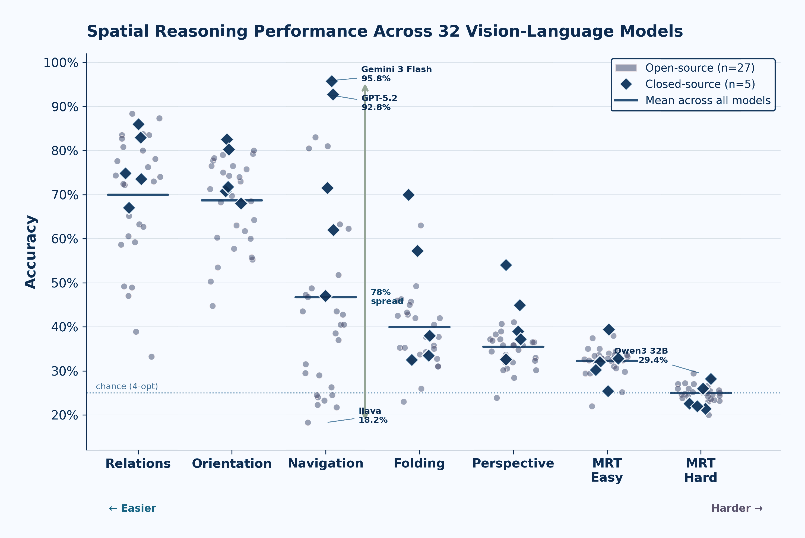
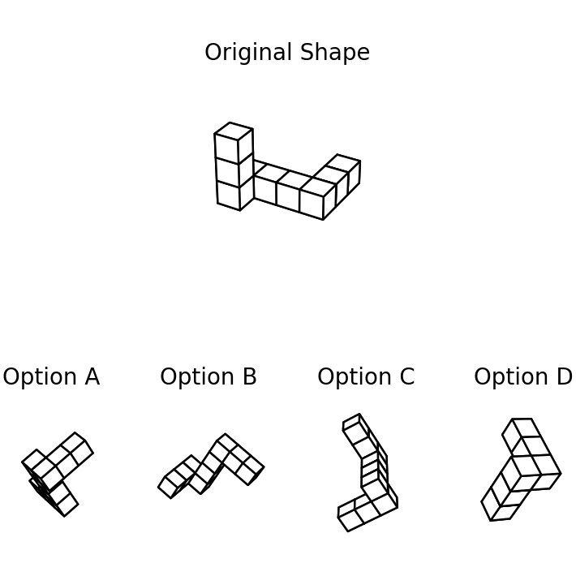
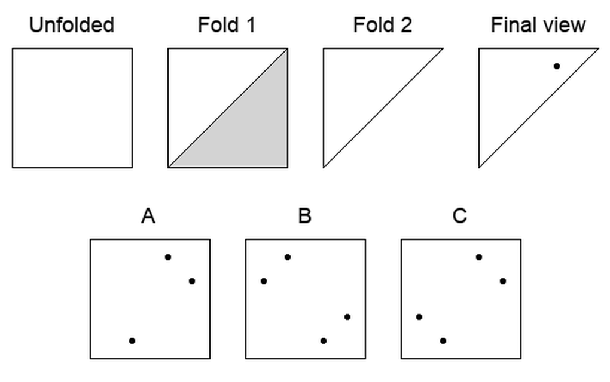

Diagnostics in depth
The evidence behind the gap





A psychometrically grounded diagnostic suite that separates reading a scene from mentally simulating it — and reveals where today's MLLMs break.
The headline
Across seven tasks, the same 32 models that describe scenes well collapse toward chance once a task demands mental transformation, with 3D mental rotation bottoming out at chance. The gap is not gradual; it is a cliff.

Abstract
Multimodal Large Language Models (MLLMs) perform well on many vision–language tasks, but this can hide fundamental spatial reasoning weaknesses. Existing benchmarks blur the line between static scene description and the dynamic mental simulation needed for rotation, folding, and perspective-taking. To target core spatial skills, we introduce a psychometrically grounded diagnostic suite of seven task splits adapted from cognitive assessments, spanning 2,855 controlled samples over synthetic and real images.
Evaluating 32 state-of-the-art MLLMs reveals a sharp dissociation: models succeed on information extraction yet fall to near-chance on mental simulation. Longer reasoning chains reduce accuracy, models consistently confuse mirror reflections with rotations, and left–right perspective inversions remain unsolved across all 32 models. Crucially, scaling model parameters does not improve mental simulation: 3D mental rotation stays near chance for all architectures and sizes. Our analysis offers interpretable failure diagnostics and concrete directions for architectural and training improvements.
The benchmark
Each split is adapted from a gold-standard psychometric assessment, probing object-centric, egocentric, and allocentric reference frames across synthetic and real images.

White polycubes on a blank background, four choices. Identify the rotated original among mirrored distractors.
Coloured shapes on a 3D Cartesian grid with three choices (one of the two mirror distractors removed).

A sheet folded once or twice and hole-punched; pick the unfolded hole pattern from three options.
Trace paths through visual mazes, count direction changes, and relate key locations.
Binary questions on object orientation in a camera-centric, eight-class egocentric taxonomy.
36 relations in natural images — from right of/above to attached to, touch, overlapping.
Adopt another agent's viewpoint — the allocentric reference-frame transformation humans find easy.
Controlled, balanced, multiple-choice — designed to isolate mental simulation from scene perception.
Results
Overall accuracy and per-split breakdown for all 32 models. Click any column header to sort. Best value per column is highlighted.
| Model | Overall ▾ | Fold. | MRT-E | MRT-H | Nav. | Ori. | Pers. | Rel. |
|---|
MRT-H chance level ≈ 25% (4 options). Every one of the 32 models lands between 20.0% and 29.4% on MRT-H — a capability ceiling, not a difficulty gradient.
What we found
We go beyond aggregate accuracy: distractor selection, cross-model agreement, reasoning-length, and controlled thinking-vs-instruct comparisons expose how models fail.
Perceptual tasks are moderate — Relations μ=70.0%, Orientation μ=68.6% — but accuracy collapses on simulation: MRT Hard sits at μ=25.0%, exactly chance. The gap is a cliff, not a slope.
A single property — whether the model grounds route planning in the maze image — drives the split. Best 95.8%, worst 18.2%: a 77.5 pp spread and the strongest correlation with overall rank (r=0.91).
Wrong answers carry far longer chains of thought — 849 vs 188 words on average, ~3× on Navigation and Folding. When uncertain, models thrash rather than converge.
Mirror-reflected distractors capture 50–63% of MRT-Easy errors and 66–72% of MRT-Hard errors. Models perceive 3D structure but project it into a reflection-symmetric representation.
Asked for another viewpoint, models answer "right" when the truth is "left" 48.1% of the time (and vice-versa 47.6%). They default to the camera frame and never flip the lateral axis.
Mental rotation is essentially flat with size (MRT-Easy r=0.12, MRT-Hard r=0.38): a 7B model matches a 241B model. Closed-source's edge (51.2% vs 43.1%) is almost entirely Navigation — on mental rotation there is no significant difference.
Paper-folding accuracy is flat across fold count × hole count (42.3–44.9%) and fold direction. Models apply one shallow rule regardless of complexity instead of simulating each fold in sequence.
Diagnostics in depth




Qualitative evidence
The same error modes recur across models: correct perception, correct reasoning about the rule, yet the wrong reference frame or the wrong rotation.
Q: Where is the boy from the man's perspective?
"The man is on the left side of the image, and the boy is walking beside him on the man's right-hand side (viewer's right)."
Analysis. The model correctly perceives the boy on the viewer's right. But the man walks toward the camera, so his left and right are mirrored relative to the viewer — the boy is on the man's left. The canonical mirror-inversion error: viewer-frame coordinates mapped onto the subject's frame without the required 180° reference-frame rotation.
Q: Which option is the original shape in a rotated orientation?
"Key fingerprint features preserved under rotation: exactly one cube has 3 neighbours; the branching point is one in from an end … Option B preserves the same connectivity. Therefore, only Option B is a rotated version."
Analysis. The model identifies the right rotation-invariant properties and checks each option — exactly the correct procedure — yet answers wrong. A reasoning–perception decoupling: it articulates what should be invariant under rotation but cannot reliably perceive whether those invariants hold in the 3D rendering.
Q: Which hand is the man using to pat the dog?
"The hand patting the dog is the one not holding the phone, which is his right hand."
Analysis. The exclusion logic is valid, but the laterality label is wrong. Because the man faces the camera, his left hand appears on the viewer's right. The model conflates image-space position with body-space identity — the mirror-inversion error, at the level of body parts.
Cite
@misc{stogiannidis2026mindgap, title = {Mind the Gap: Diagnosing Spatial Reasoning Failures in Multimodal Large Language Models}, author = {Stogiannidis, Ilias M. and McDonagh, Steven and Tsaftaris, Sotirios A.}, note = {Preprint}, year = {2026} }
An earlier version appeared as arXiv:2503.19707 — "Mind the Gap: Benchmarking Spatial Reasoning in Vision-Language Models".